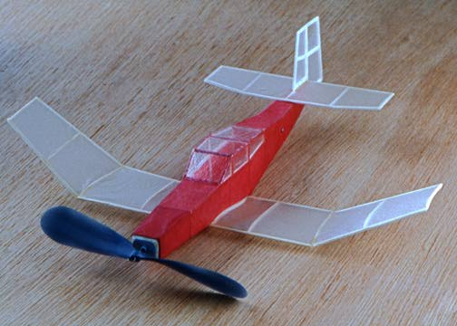

This delightful model is one of a long line of designs from the drawingboard of Dick Baxter. Named the Akro, it was originally designed as a 16" span model. This version was built to a span of 8", merely by reducing the plans on a photocopier, and halfing all the wood dimensions. This model weighs almost nothing, and flies forever. Build one now!!
return to model index | view the Akro plan preview
read other thoughts about the Akro
Copyright 1997, Thayer Syme. All rights reserved